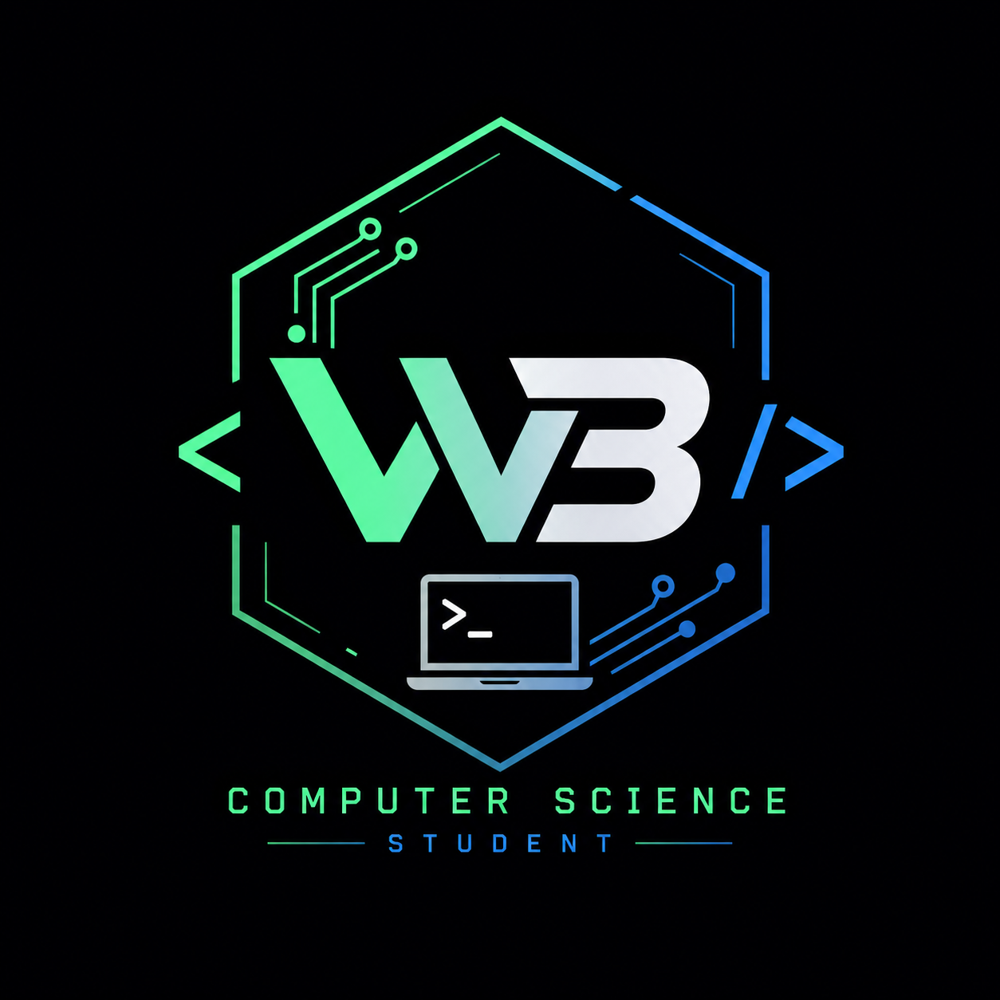

I'm Will Boone, a Computer Science student at the University of Arkansas (GPA 3.84). I build low-level network and security tooling — a real-time intrusion detection system, a malware analysis sandbox, a distributed job-queue — mostly in Go and Python, where reliability isn't optional.
A real-time network monitor in Go that captures live packets via libpcap and decodes Ethernet, IPv4, TCP, UDP, and DNS headers from raw bytes with hand-written parsers, tracking per-flow statistics across a concurrent, mutex-guarded state model. Detection heuristics for TCP port scans and SYN-flood attacks use rolling time-windows and configurable thresholds, with per-source alerting and de-duplication to suppress repeat alarms.
A malware analysis sandbox in Go combining hand-written PE/ELF binary parsers with dynamic execution monitoring, correlating static and behavioral signals into a weighted 0–100 threat score with MITRE ATT&CK-mapped findings. Sandboxed execution uses cgroup/ulimit resource confinement, full syscall tracing via strace, and live network capture with DNS/TLS SNI/HTTP extraction, generating self-contained JSON and HTML threat reports.
A distributed job-queue system where multiple worker processes poll a FastAPI backend to claim and execute priority-ordered tasks, with atomic job assignment to prevent duplicate claims under concurrent load — validated with 3–4 workers draining 25+ jobs in under 3 minutes with zero duplicate assignments. Includes automatic retry with configurable limits, dead-worker detection with requeueing, and a live dashboard surfacing throughput, failure rate, and a per-worker efficiency leaderboard.